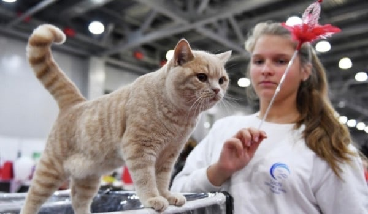
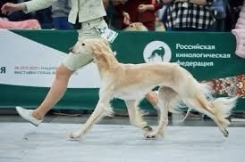
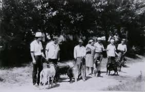
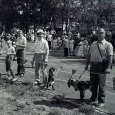

| SoftPow | |
|---|---|
| О нас Животные Популярные бренды Жизненный период Выставки |
Выставки
 Выставки для домашних животных – это мероприятия, на которых владельцы домашних питомцев могут показать своих любимцев и узнать больше о различных породах. Такие выставки проводятся уже несколько веков и начались с выставок для собак в Великобритании в 1859 году. Сегодня они проводятся по всему миру и позволяют людям насладиться красотой и уникальностью каждого животного. На выставках для домашних животных можно увидеть множество разных пород собак, кошек, кроликов, птиц и других животных. Владельцы питомцев готовят своих животных к выставке заранее, чтобы они выглядели наилучшим образом. Животные чистятся, стригутся и украшаются специальными аксессуарами. В день выставки они приходят на место события, где эксперты оценивают их внешний вид и характеристики породы. Выставки для домашних животных являются отличным способом провести время с семьей и друзьями. На мероприятии можно узнать много интересного о различных породах животных, а также получить признание за своих питомцев. Многие выставки проводятся в формате конкурсов, где животные соревнуются за звание лучшего представителя своей породы.  Одной из самых популярных выставок для домашних животных является выставка собак. На таких мероприятиях можно увидеть представителей всех пород – от маленьких чихуахуа до огромных датских догов. Собаки оцениваются по множеству критериев, включая внешний вид, характер и поведение на ринге. Кроме выставок для собак, существуют также выставки для кошек, кроликов, птиц и других животных. На выставках для кошек можно увидеть множество различных пород – от экзотических до обычных домашних кошек. Кошки оцениваются по внешнему виду, шерсти, форме головы и другим параметрам. Выставки для домашних животных – это не только возможность показать своих питомцев и узнать больше о различных породах, но и способ провести время с семьей и друзьями. На мероприятии можно увидеть множество красивых и интересных животных, а также пообщаться с другими владельцами домашних питомцев. Выставки для домашних животных – это отличный способ насладиться красотой и уникальностью каждого животного. История появления выставок
 Выставки для домашних животных появились несколько веков назад. В то время люди начали держать дома животных не только для охоты и защиты, но и для украшения своих домов. Сначала выставки проводились только для собак, но потом к ним присоединились кошки, кролики, птицы и другие животные. Первые выставки для собак были проведены в Великобритании в 1859 году. Они были организованы для того, чтобы показать различные породы собак и определить лучших представителей каждой породы. Выставки стали очень популярными, и вскоре они начали проводиться по всей Европе. В 1877 году в США была создана Американская кинологическая ассоциация, которая начала проводить выставки для собак по всей стране. Эти выставки стали очень популярными, и они продолжают проводиться по сей день.  Выставки для других домашних животных также начали проводиться в конце XIX века. В 1895 году в Лондоне была проведена первая выставка для кошек. В 1902 году в США была создана Национальная ассоциация любителей кошек, которая начала проводить выставки для кошек по всей стране. Сегодня выставки для домашних животных проводятся по всему миру. Они позволяют людям показать своих любимцев, узнать больше о различных породах и получить признание за своих животных. Кроме того, выставки для домашних животных являются отличным способом провести время с семьей и друзьями и насладиться красотой и уникальностью каждого животного. |